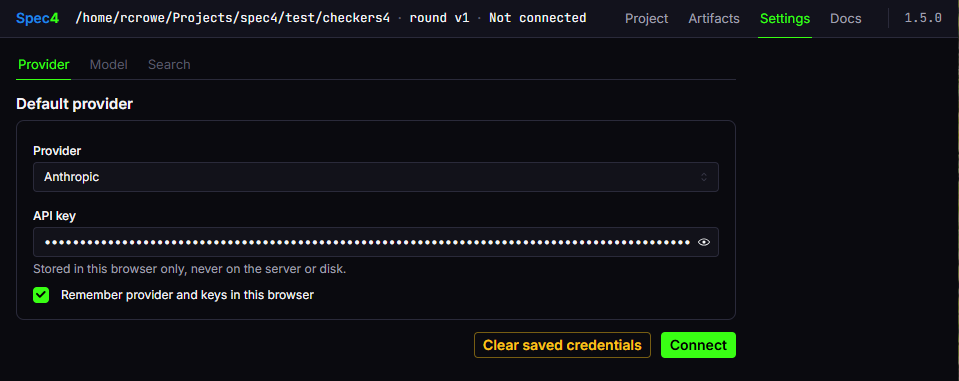

Settings
Spec4 has three settings: a model provider and key, a default model and reasoning effort, and an optional web-search provider. The setup wizard asks for them in that order the first time you open a project; the Settings page carries the same three steps afterwards.
This is the Settings page, on the provider step:

Providers
| Provider | Models fetched from |
|---|---|
| Anthropic | api.anthropic.com/v1/models |
| AWS Bedrock | bedrock.amazonaws.com |
| Cohere | api.cohere.com/v2/models |
| Google Gemini | generativelanguage.googleapis.com |
| Mistral | api.mistral.ai/v1/models |
| Nebius | api.tokenfactory.nebius.com/v1/ |
| OpenAI | api.openai.com/v1/models |
| OpenRouter | openrouter.ai/api/v1/models |
Models are fetched live from the provider when you connect, with a hardcoded fallback list if the API is unavailable.
AWS Bedrock accepts Bedrock API keys, IAM access keys, or ambient AWS credentials — environment variables, ~/.aws/credentials, or IAM roles.
Where keys live
The key you enter is held in your browser and sent to one place: the provider it belongs to. It is never written to disk and never sent to spec4.ai or anywhere else.
Two browser stores are involved. The session store (sessionStorage) holds the key for the current tab. If you tick Remember provider and keys in this browser, the preferences store (localStorage) keeps it across sessions and upgrades; that is the opt-in. Clear saved credentials empties the preferences store. The server process holds no credential.
Default model and effort
The model step sets the project's default: one provider, one model, and one reasoning effort. Every agent uses the default unless you choose otherwise for that agent (next section).
Effort is sent to the provider as LiteLLM's reasoning_effort. The values offered are default, low, medium, and high, plus max on Anthropic models and xhigh on OpenAI models. Whether a model accepts the parameter at all is checked with a network-free capability probe; which levels it accepts is not, so:
defaultsends no effort parameter.- A model that doesn't accept the parameter ignores it; the call goes through.
- A model that accepts the parameter but rejects the level is retried once with no effort, and the call is recorded in
usage.jsonasdefault (fallback from <level>).
Spec4 never sends a provider-specific thinking or budget parameter. reasoning_effort is the only mechanism.
Per-agent model and effort
Each agent can run on a different provider, model, and effort from the default, chosen in three places:
- The gate. Before an agent starts, a one-line panel names the agent and what it is about to run on —
Model for Phaser: claude-sonnet-5 · default— with three choices: use the default, pick a model, or keep the override carried forward from the agent's last run. - The chip. Under the composer while an agent is running,
Model: <name> · Changereopens the choice mid-agent. - The retry. When a provider returns an error, the retry panel offers a different provider, model, and effort. What you pick becomes the agent's selection for the rest of the round.
An override holds its own key and never changes the default. Sub-agents inherit their parent's choice — Brainstormer's feature speccer runs on Brainstormer's model, Phaser's seam check on Phaser's. The status bar, the chip, and each agent's row on the project page show the selection as <model> · <effort>, or the model alone when the effort is default, and usage.json records what every call actually ran on.
The developer picks, every time. Nothing in Spec4 routes a call to a model on its own.
Search
Web search is optional and off unless you give it a key. With one, every agent can search for the standards, protocols, and SDKs it names and embed the canonical documentation link rather than recall one.
Both are reached over MCP; the key is sent only to the provider it belongs to. The key is stored like the provider key, in the same two browser stores under the same opt-in.
What the published rounds ran on
Spec4's three rounds on itself, from each round's usage.json:
- Default:
claude-sonnet-5on Anthropic, in all three rounds. - Phaser:
claude-opus-5, in all three rounds. - Designer:
claude-fable-5-1inv0andv1;claude-opus-5inv2. - Every other agent that ran — CodeScanner, Brainstormer, StackAdvisor — on the default.
That is practice, not a recommendation. Phaser got the stronger model because it holds every upstream artifact in context while it drafts and was the first or second largest line in every round; Designer got one because its single call is the whole mock. The three rounds predate per-agent effort, so every call ran at the provider's default. Per-agent figures are on the Artifacts page.